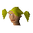

Ana

| Config name | ana |
| NPC id | 822 |
| Combat level | hidden |
| Options | Talk-to |
| Wander range | 3 tiles from spawn |
| Defined in | scripts/quests/quest_desertrescue/configs/desertrescue.npc |
Ana
She looks like a tourist.
Show all 1 spawn on the world map → Open in knowledge graph →
Locations
| Area | Coordinates | Level | Count | Map |
|---|---|---|---|---|
| Desert Mining Camp (underground) | 3302, 9466 | 0 | 1 | view |
Dialogue
AnaGreat! Thanks for getting me out of that mine! And that barrel wasn't too bad anyway! Pop by again sometime, I'm sure we'll have a barrel of laughs!
AnaOh! I nearly forgot! Here's a key I found in the tunnels. It might be of some use to you, not sure what it opens. Sorry, but I have to go now.
AnaThank you very much for returning my daughter to me. I'm really very grateful... I would like to reward you for your bravery and daring.
AnaI can offer you increased knowledge in two of the following areas.
AnaOkay, now choose your second skill.
AnaOkay, that's all the skills I can teach you!
PlayerHello!
AnaHello there, I don't think I've seen you before.
PlayerNo, I'm new here!
AnaI thought so you know! How do you like the hospitality down here? Not exactly Al Kharid town style is it? Well, I guess I'd better get back to work.
AnaDon't want to get into trouble with the guards again.
PlayerDo you get into trouble with guards often?
AnaNo, not really, because I'm usually working very hard. Come to think of it, I'd better get back to work.
PlayerDo you enjoy it down here?
AnaOf course not! I just don't have much choice about it a the moment.
PlayerI want to try and get you out of here.
AnaWow! You're brave. How do you propose we do that? In case you hadn't noticed, this place is quite well guarded.
PlayerWe could try to sneak out.
AnaThat doesn't sound very likely. How did you get in here anyway? Did you deliberately hand yourself over to the guards? Ha, ha ha ha! Sorry, just kidding.
PlayerI managed to sneak past the guards.
AnaHmm, impressive, but can you so easily sneak out again? How did you manage to get through the gate?
PlayerI used a key.
PlayerIt's a trade secret!
AnaOh, right, well, I guess you know what you're doing. Anyway, I have to get back to work. The guards will come along soon and give us some trouble else.
PlayerHuh, these guards are rubbish, it was easy to sneak past them!
PlayerHave you got any suggestions?
AnaHmmm, let me think...
AnaHmmm.
AnaNo, sorry...
AnaThe only thing that gets out of here is the rock that we mine.
AnaNot even the dead get a decent funeral. Bodies are just thrown down disused mine holes. It's very disrespectful...
PlayerOkay, I'll check around for another way to try and get out.
AnaGood luck!
PlayerHow does the rock get out?
AnaWell, we mine it in this section, then someone scoops it into a barrel. The barrels are loaded onto a mine cart. Then they're deposited near the surface lift.
AnaI have no idea where they go from there. But that's not going to help us, is it?
PlayerDo you have any ideas about how we can get out of here?
AnaHmmm, not really, I would have tried them already if I did. The guards seem to live in the compound. How did you get in there anyway?
PlayerOkay, see ya!
AnaGoodbye and good luck!
PlayerWhat's your name.
AnaMy name? Oh, how sweet, my name is Ana. I come from Al-Kharid though we've only recently moved there. I was born, and did most of my growing up, in Varrock. I thought the desert might be interesting.
AnaWhat a surprise I got!
PlayerWhat kind of surprise did you get?
AnaWell, I was just touring the desert looking for the nomad tribe to the West. And I was set upon by these armoured men.
AnaI think that the guards think I am an escaped prisoner. They didn't understand that I was exploring the desert as an adventurer.
PlayerDo you want to go back to Al Kharid?
AnaSure, I miss my Mum, her name is Irena and she is probably waiting for me. How do you propose we get out of here though?
AnaI'm sure you've noticed the many square jawed guards around here. You look like you can handle yourself, but I have my doubts that you can take them all on!
AnaI think you might have me confused with someone else.
AnaHey, what do you think you're doing?
AnaHey, what do you think you're doing? Leave me alone and let me get on with my work. Else we'll both be in trouble. Oh no, NOT AGAIN!
AnaAna (in a Barrel)
AnaThanks, but I don't need that... really!
Quests
Referenced in scripts
scripts/quests/quest_desertrescue/scripts/ana.rs2scripts/quests/quest_desertrescue/scripts/quest_desertrescue.rs2